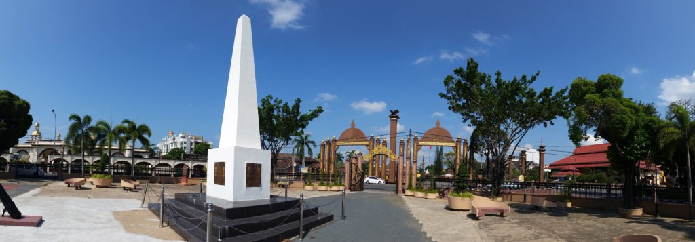
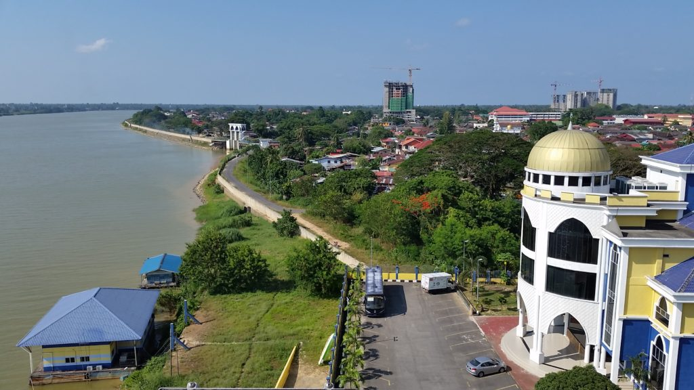
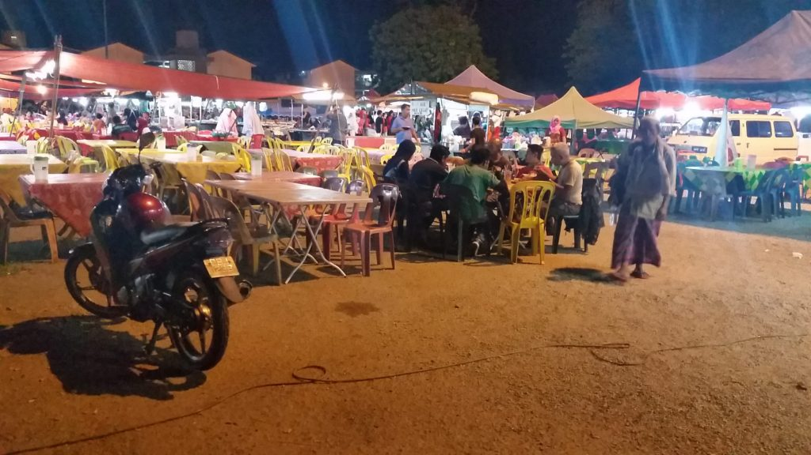
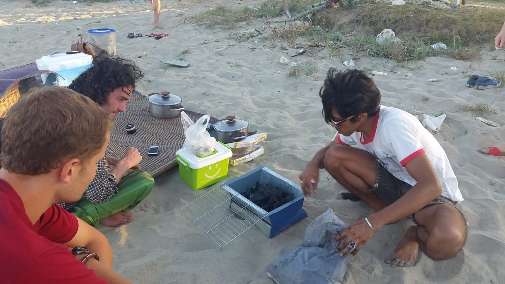
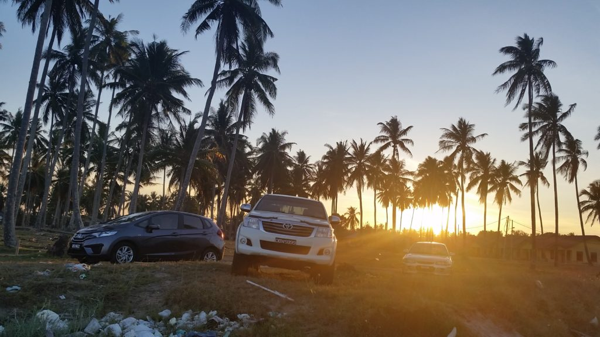
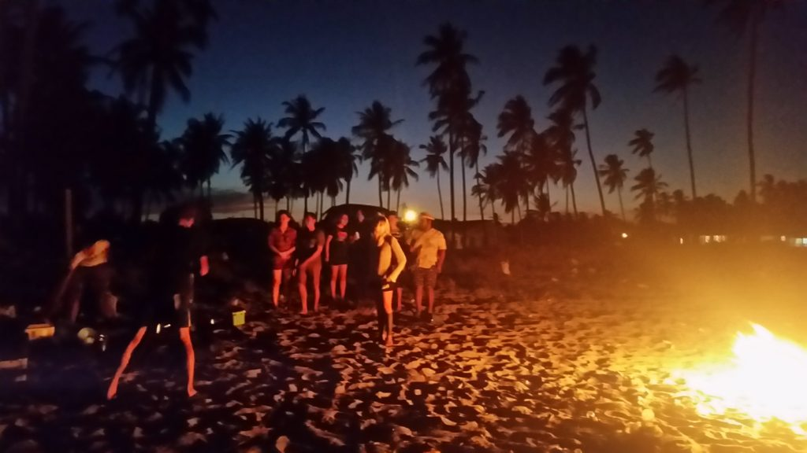
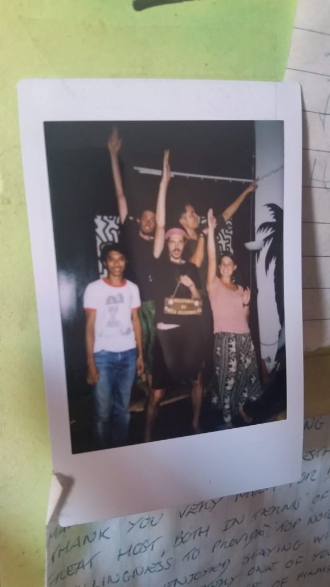

We flew from KK to Kota Bharu without a problem. We finally made it to peninsular Malaysia! While trekking around Borneo, we heard that the island culture is different from the mainland, so we were interested to see the differences for ourselves. One major thing we noticed: religion is much more prevalent within the peninsula.
Kota Bharu is a little dull compared to some of the other places we had visited. Day one we attempted to walk through a few museums that we had researched in advance, only to find them completely closed. So instead, we wandered around the city to see the sights and people watch. We did find a delicious lunch restaurant and enjoyed being the only westerners at the tiny place we were eating at. Eventually, we made it back to our hostel to relax before more food!
We made a few hostel friends and ended up tagging along to the night market. The food was alright, but the appeal of the night was chatting with fellow travelers who were out as long as we had been. The guys we met had similar interests and a love for traveling that we felt as well. We would soon notice more and more how different the westerners were in Malaysia. As a Muslim country, Malaysia attracts a different sort of person than any other southeast Asian country we had visited so far. I think the way alcohol is frowned upon (or completely banned depending where you go) is one of the main factors. We hardly found the ‘partying type’ in Malaysia, which was fairly refreshing after a handful of obnoxious people we met on the trip at various points (the worst were the ones in the same dorm as you with no regard for the time of day, night, or level of noise they were making). Most traveling folks we met in Malaysia had more love for experiencing people or the culture than than a night out on the town. It was one of the appeals of the country.
{kind=link}
{kind=link}
The owner of the hostel were staying at was a really nice local guy and ended up inviting us to a beach barbecue with his friends the following day.
{kind=link}
He supplied cheese-filled hotdogs (“what westerners eat”, right?) along with some Malaysian dishes made by his mom that were more to my taste. While there, we chatted with the locals and learned a lot about the Malaysian culture. Something that surprised us was the amount of racism that Chinese Malaysians felt from some of the Malay citizens as well as the government. On a lighter note, we also learned that it is illegal in the state we were in to buy or sell any sort of alcohol. Apparently, the beer they were passing around comes from Thailand because it is cheaper/easier to cross the boarder than to find it elsewhere in Malaysia. Crazy.
{kind=link}
All in all, it was the people that made Kota Bharu special for us. The city did not have much to offer in terms of activities or sights, but the people we met were all so nice and friendly that I enjoyed my time there immensely. If you do go there, however, look up the cultural shows. They are quite cool apparently, but are only on certain days of the week (days we weren’t there unfortunately).
{kind=link}
{kind=link}
Onto our next volunteering opportunity: a month hanging out on a resort island. It’s gonna be rough… heh. Until then!
{kind=link}
Regards,
Danielle and Grant